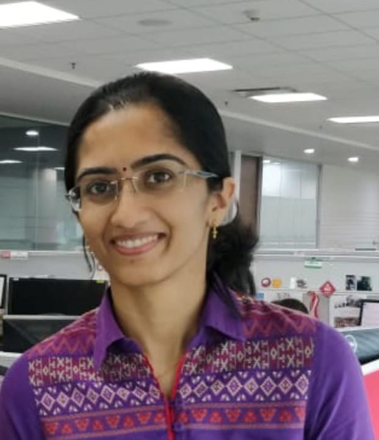

Sravanti Addepalli is a PhD student at the Indian Institute of Science, Bengaluru. She is pursuing research in the area of Adversarial Robustness of Deep Networks at the Video Analytics Lab in the Department of Computational and Data Sciences. Prior to this, she worked for 10 years at SanDisk (now Western Digital) in analog and digital circuit design. Sravanti is interested in exploring the vulnerabilities of Deep Networks and building algorithms to improve their robustness. She is a recipient of the prestigious Google PhD fellowship, Prime Minister’s Fellowship for Doctoral Research and Qualcomm Innovation Fellowship.
Short Abstract: The vulnerability of Deep Neural Networks to adversarial perturbations has spurred immense interest towards the development of models that are robust to such attacks. However, present state-of-the-art adversarial defenses involve the use of 10-step adversaries, which renders them computationally infeasible for application to large-scale datasets. In this talk, I will present our research related to adversary-free and single-step adversarial training methods that achieve robustness by introducing regularizers to enforce function smoothing in the vicinity of data samples. I will further discuss a Hybrid training approach that combines the effectiveness of a two-step defense with the efficiency of a single-step defense. We demonstrate superior results when compared to existing multi-step defenses such as TRADES and PGD-AT, at a significantly lower computational cost.